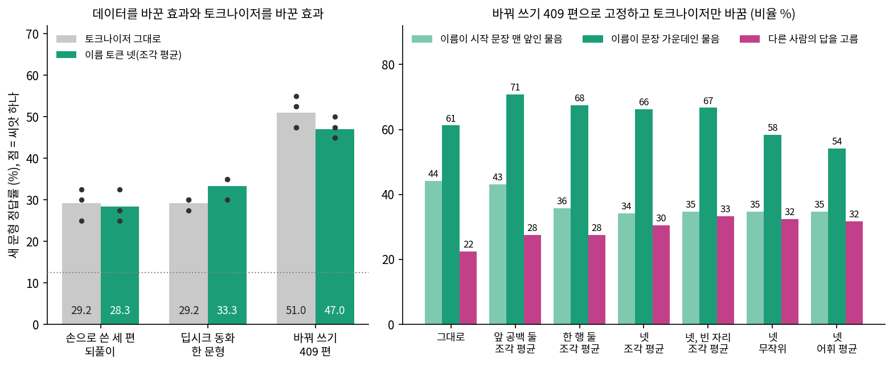
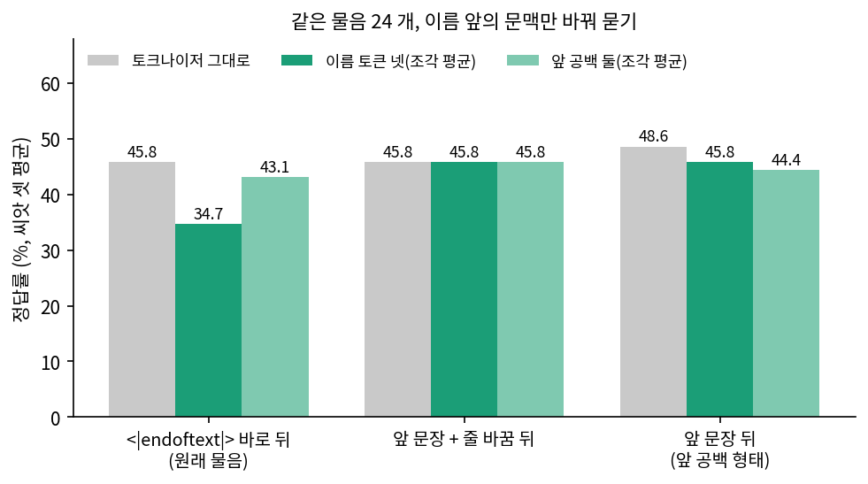

동화 속의 우리: 루나에게 우리 이야기를 가르치려면 몇 편을 써야 할까
토크나이저 직접 편집: 이름을 토큰 하나로 박으면
바꿔 쓴 글 450 편을 받는 데 한 시간 넘게 걸렸다. 기다리는 동안 민준은 토크나이저 표를 다시 펼쳐 놓고 「␣M in j un」이 적힌 줄을 손가락으로 두드리고 있었다.

글을 왜 이렇게 오래 쓰게 해. Seoye 는 「␣S e oy e on」 다섯 조각에서 끝을 못 붙인 거잖아. 이름을 그냥 토큰 하나로 박으면 되잖아.

철자는 그럴 수 있겠네. 한 칸이면 중간에 멈출 자리가 없으니까. 그런데 거북이는?

그것도 나아지지 않을까? 알렌주랑 리 얘기로는 사실이 이름 토큰 자리에 모인다며. 조각 넷에 나뉠 걸 한 칸에 모아 주는 거잖아.

그럼 재 보자. 같은 1,000 스텝, 같은 물음 40 개로. 토큰만 바꿔도 바꿔 쓰기를 대신할 수 있는지, 둘을 같이 쓰면 더 나은지.
두 사람이 알고 싶은 것은 셋으로 나뉜다. 이름 철자가 얼마나 나아지는가, 사실 정답률이 얼마나 나아지는가, 그 효과가 글을 바꿔 쓴 효과에 비해 얼마나 큰가이다.
토크나이저 고치기
BPE 어휘는 합치기 표에서 나오는데, 타이니스토리즈에 없는 이름은 어휘를 아무리 키워도 합치기 표에 들지 않는다. 그래서 표를 다시 학습하지 않고 표 바깥에 직접 적는다. 우리 토크나이저는 글을 조각(공백 + 글자 묶음)으로 나눈 뒤 조각마다 부호화 결과를 cache 에 저장해 두므로, cache 에 답을 미리 적으면 나머지 코드는 그대로 돌아간다.
# sources/synthetic-data/tok_edit_lib.py 에서 (발췌)
FORMS4 = [" Minjun", "Minjun", " Seoyeon", "Seoyeon"]
def edit_tokenizer(tok, forms, mode):
edits = {}
for k, form in enumerate(forms):
frags = tok.encode_ordinary(form) # 예전 조각 번호들(초기화에 쓴다)
new_id = FREE_SLOTS[k] if mode == "reuse" else tok.vocab_size
if mode != "reuse":
tok.vocab_size += 1
tok.vocab[new_id] = form.encode("utf-8") # 되돌릴 때 쓸 바이트
tok.cache[form] = [new_id] # 이 조각은 이제 토큰 하나
...
return edits # tok.eot_id 는 고치지 않는다: 4095 그대로
토큰을 왜 넷이나 더하는지는 부호화해 보면 나온다(sources/synthetic-data/tok_edit_inspect.py, 출력은 tok_edit_inspect.out).
' Minjun' 4 토큰 [␣M in j un] → 1 토큰 [␣Minjun]
'Minjun' 4 토큰 [M in j un] → 1 토큰 [Minjun]
' Seoyeon' 5 토큰 [␣S e oy e on] → 1 토큰 [␣Seoyeon]
'Seoyeon' 5 토큰 [S e oy e on] → 1 토큰 [Seoyeon]
' minjun' 3 토큰 [␣min j un] → 3 토큰 [␣min j un]
"Minjun's" 5 토큰 [M in j un 's] → 2 토큰 [Minjun 's]
'Minjun’s' 6 토큰 [M in j un ’ s] → 3 토큰 [Minjun ’ s]
' "Minjun' 5 토큰 [␣" M in j un] → 2 토큰 [␣" Minjun]
' Minjunie' 5 토큰 [␣M in j un ie] → 5 토큰 [␣M in j un ie]
varied: 409 편, 예전 106,107 토큰 → 편집 뒤 81,323 토큰 (23.4% 줄어듦), 다시 부호화 0.09초
새 토큰 등장 [('␣Minjun', 2630), ('Minjun', 918), ('␣Seoyeon', 2757), ('Seoyeon', 778)]
앞 공백이 있는 「␣Minjun」과 없는 「Minjun」은 토크나이저에게 다른 글이어서, 줄 맨 앞이나 따옴표 바로 뒤의 이름은 공백 없는 형태로 들어온다. 소유격 's 는 이미 토큰 하나라 더하지 않아도 되지만, 곱은 따옴표로 쓴 ’s 는 두 토큰으로 남는다. 소문자로 쓰거나 「Minjunie」처럼 뒤에 글자가 붙으면 조각 전체가 이름과 달라지므로 예전 조각으로 돌아간다. 바꿔 쓴 글은 23.4% 짧아졌고, 다시 부호화하는 데는 0.09초가 걸렸다.
모델 고치기: 입력과 출력이 같은 행을 쓴다
새 번호 4096 번에는 임베딩 행렬의 행이 없다. 그런데 동화 GPT 는 입력 임베딩과 출력 층이 행렬 하나를 함께 쓰므로(lm_head.weight = wte.weight), 입력만 넓히면 곧바로 문제가 생긴다.
lm_head.weight 와 wte.weight 가 같은 텐서인가: True
임베딩 행렬 (4096, 512), 파라미터 수 27,579,392
wte 만 넓힌 경우: 입력 (4100, 512), 출력 (4096, 512), 같은 텐서인가 False
정답에 4096 번을 주면: IndexError: Target 4096 is out of bounds.
edit_model 뒤: 입력 (4100, 512), 출력 (4100, 512), 같은 텐서인가 True, 파라미터 수 27,581,440
# sources/synthetic-data/tok_edit_lib.py 에서 (발췌)
for form, (new_id, frags) in edits.items():
if init == "mean": new[new_id] = old[frags].mean(0) # 이름 조각들의 평균
elif init == "vmean": new[new_id] = old.mean(0) # 어휘 전체의 평균
elif init == "rand": new[new_id] = 0.02 * torch.randn(d, generator=g, ...)
m.wte = nn.Embedding(V, d, ...); m.wte.weight.data.copy_(new)
m.lm_head = nn.Linear(d, V, bias=False, ...)
m.lm_head.weight = m.wte.weight # 이 줄이 없으면 입력과 출력이 따로 놀고, 출력은 4,096 행에 머문다
늘어난 파라미터는 4 행 × 512 = 2,048 개이고, 새 토큰의 입력 벡터와 출력 벡터는 같은 행 하나이다. 입력으로 읽을 때 쓰는 그 벡터가, 내보낼 때는 잔차 스트림 끝의 벡터와 내적해 로짓이 된다. 내적은 선형이므로 조각 평균으로 초기화한 행의 로짓은 학습 전까지 조각 로짓들의 평균과 같다.
어휘 크기를 늘리지 않는 방법도 있는데, 학습 글과 검증 글의 토큰을 모두 세어 보면 쓰이지 않는 번호가 나온다.
한 번도 안 나온 번호 87 개. 바이트 자리 78 개, 합친 토큰 자리 9 개
0xF5~0xFF 가운데 합치기에 쓰인 것: []
가장 드문 합친 토큰 다섯: [('␣ornam', 0), ('␣ambul', 0), ('␣noteb', 0), ('␣sungl', 0), ('erop', 0)]
1,000 번 넘게 나온 토큰 행의 길이 평균 1.184, 한 번도 안 나온 바이트 자리 행의 길이 평균 1.326
BPE 는 바이트 256 개를 어휘에 먼저 넣고 시작하는데, 0xF5 에서 0xFF 까지는 UTF-8 글에 나올 수 없는 값이다. 그 가운데 0xF8~0xFB 네 자리를 이름에 내주면 임베딩 행렬의 크기도, 학습 글의 토큰 파일도 바꿀 필요가 없다. 자주 쓰는 토큰을 치우려면 학습 글 5억 5천만 토큰을 다시 부호화해야 하지만 이 자리들은 그럴 일이 없다.
토크나이저는 아래처럼 나눠 재기로 했다. 처음에는 넷만 더할 생각이었는데, 앞 공백 형태와 공백 없는 형태가 서로 다른 행으로 갈라지는 것이 걱정되어 한 행으로 모은 「한 행 둘」을 나중에 넣었다.
| 이름 | 어휘 | 새 토큰 | 초깃값 |
|---|---|---|---|
| 그대로 | 4,096 | 없음(이름이 네다섯 조각) | |
| 넷, 조각 평균 / 무작위 / 어휘 평균 | 4,100 | ␣Minjun, Minjun, ␣Seoyeon, Seoyeon | 이름 조각 평균 / 표준편차 0.02 노이즈 / 어휘 전체 평균 |
| 앞 공백 둘, 조각 평균 | 4,098 | ␣Minjun, ␣Seoyeon(공백 없는 이름은 예전 조각) | 조각 평균 |
| 한 행 둘, 조각 평균 | 4,098 | Minjun, Seoyeon(앞 공백이 있으면 공백 토큰 + 이름 토큰) | 조각 평균 |
| 넷, 빈 자리, 조각 평균 / 옛 벡터 | 4,096 | 네 토큰을 0xF8~0xFB 자리에 | 조각 평균 / 해당 번호의 옛 벡터 그대로 |
데이터 없이 토큰만 넣으면
학습 없이 토큰만 넣은 루나에게 먼저 이름을 주어 보았다(tok_edit_run_b.out, 표의 숫자는 tok_edit_summary.out 8절).
학습 없음 | 그대로 | 13/61 | 4/79 | [('Seoye', 37), ('Minjo', 17), ('Seoy', 17)] | 7.5
학습 없음 | 넷, 조각 평균 | 0/2 | 0/0 | [('Ming', 2)] | 7.5
샘플(온도 0.8, 씨앗 0) 「Once upon a time, Minjun and Seoyeon」 → ' came to the beach. They were very excited. They were ready to play in the sand and swim in the water.\nBut then they saw a big fish. Peter said, "Let\'s go and say hello to the fish!"\nButton was scared. He said, "No, I don\'t want to go! I don\'t want to disturb the fish!"\nBut Hopper and Hopper had to trust the fish …

Seoye 는 없어졌는데… 이름을 아예 안 불러. 스무 번 썼는데 서연은 한 번도 안 나왔어. Peter 는 누구고 Hopper 는 왜 둘이야.

틀린 철자가 0 개이긴 하네. 축하해.
이름 칸의 앞 숫자가 바른 철자, 뒤 숫자가 Min…, Seo…, Ser… 로 시작한 낱말의 수이다. 편집하기 전의 루나는 이름을 망가뜨리면서도 79 번 썼는데, 새 토큰을 받은 루나는 Seo… 로 시작하는 낱말을 한 번도 쓰지 않았다. 앞의 이름을 베껴 쓰려면 출력에서 그 행의 로짓이 높아야 하는데, 조각 평균의 로짓은 「in」「j」「un」처럼 낱말 앞에 거의 오지 않는 조각들의 로짓까지 평균한 값이어서 낮을 것이고, 이것이 원인일 것으로 짐작한다. 세 편을 한 번씩만 읽힌 조건에서도 결과가 같아서, 토크나이저를 그대로 두면 씨앗 0 에서 Minjun 21/56, Seoyeon 41/53 이던 철자(run_hand.out)가, 토큰을 더하면 씨앗 셋 모두 0/0 이었다. 토큰 하나를 어휘에 넣는 일은 그 토큰을 쓰는 법까지 가르쳐 주지 않는다.
이어서 학습한 결과
데이터를 함께 읽히면 이야기가 달라진다. 조건은 앞의 비교와 같고(1,000 스텝, 배치의 8분의 1, 물음 50 개), 맨 앞은 이름이 시작 문장 맨 앞에 오는 물음 24 개, 가운데는 나머지 물음 16 개의 정답률이다(tok_edit_summary.out 7절).
데이터 | 토크나이저 | 씨앗 | 새 문형 | 맨 앞 | 가운데 | 바뀜 | 학습 문형 | 바이트당 비트
세 편 되풀이 | 그대로 | 3 | 29.2 ± 3.8 | 27.8 | 31.2 | 15.0 | 86.7 | 0.4288
세 편 되풀이 | 넷, 조각 평균 | 3 | 28.3 ± 3.8 | 23.6 | 35.4 | 20.8 | 60.0 | 0.4288
한 문형 300 | 그대로 | 3 | 29.2 ± 1.4 | 27.8 | 31.2 | 15.8 | 100.0 | 0.4303
한 문형 300 | 넷, 조각 평균 | 3 | 33.3 ± 2.9 | 26.4 | 43.8 | 15.8 | 96.7 | 0.4305
한 문형 300 | 넷, 무작위 | 3 | 26.7 ± 3.8 | 19.4 | 37.5 | 17.5 | 80.0 | 0.4306
바꿔 쓰기 409 | 그대로 | 5 | 51.0 ± 3.4 | 44.2 | 61.2 | 22.5 | 96.0 | 0.4311
바꿔 쓰기 409 | 넷, 조각 평균 | 5 | 47.0 ± 2.1 | 34.2 | 66.2 | 30.5 | 78.0 | 0.4315
바꿔 쓰기 409 | 넷, 무작위 | 3 | 44.2 ± 1.4 | 34.7 | 58.3 | 32.5 | 63.3 | 0.4316
바꿔 쓰기 409 | 넷, 어휘 평균 | 3 | 42.5 ± 2.5 | 34.7 | 54.2 | 31.7 | 83.3 | 0.4316
바꿔 쓰기 409 | 앞 공백 둘, 조각 평균 | 3 | 54.2 ± 1.4 | 43.1 | 70.8 | 27.5 | 93.3 | 0.4314
바꿔 쓰기 409 | 한 행 둘, 조각 평균 | 5 | 48.5 ± 2.9 | 35.8 | 67.5 | 27.5 | 88.0 | 0.4314
바꿔 쓰기 409 | 넷, 빈 자리, 조각 평균 | 3 | 47.5 ± 2.5 | 34.7 | 66.7 | 33.3 | 83.3 | 0.4315
바꿔 쓰기 409 | 넷, 빈 자리, 옛 벡터 | 3 | 47.5 ± 2.5 | 38.9 | 60.4 | 30.8 | 73.3 | 0.4313

데이터를 바꾼 효과부터 비교한다. 토크나이저를 그대로 둔 채 한 문형에서 바꿔 쓰기로 옮기면 29.2% 에서 51.0% 로 21.8 점 오른다. 바꿔 쓴 글에서 토크나이저만 바꾸면 조각 평균 토큰 넷은 4.0 점 내려가고, 가장 좋았던 앞 공백 둘도 같은 씨앗의 기준선 51.7% 보다 2.5 점 오를 뿐이며 씨앗별 차이가 +2.5, −2.5, +7.5 로 부호가 섞인다. 물음 40 개에서 한 문제가 2.5 점이고, 같은 스크립트와 같은 씨앗으로 다시 돌려도 한 문형 씨앗 0 이 32.5%(run_synth.out)에서 30.0% 로, 세 편 되풀이 씨앗 1 이 27.5%(run_hand.out)에서 25.0% 로 달라졌으니, 이 정도 차이는 있다고 말하기 어렵다. 토큰 편집은 바꿔 쓰기를 대신하지 못했고, 함께 쓴 경우에도 더 낫다는 증거를 얻지 못했다.
초깃값은 차이를 만들었다. 넷을 더할 때 같은 세 씨앗의 정답률이 조각 평균 47.5%, 무작위 44.2%, 어휘 평균 42.5% 였고, 한 문형에서도 조각 평균 33.3% 와 무작위 26.7% 로 벌어졌다. 조각 평균에서 출발하면 예전 조각이 배운 것을 일부 물려받고 시작한다고 볼 수 있다. 빈 자리를 재활용한 루나는 끝에 더한 루나와 같은 씨앗에서 정답률이 47.5% 로 같았으니, 어휘를 늘리지 않아도 잃는 것은 보이지 않았다. 옛 벡터를 그대로 둔 빈 자리도 47.5% 였지만 「Minjuna」처럼 새 토큰 뒤에 조각을 더 붙인 철자가 나왔다.
나아진 것은 이름 철자이다(tok_edit_summary.out 8절).
바꿔 쓰기 409 | 그대로 | 546/556 | 481/485 | [('Min', 6), ('Minj', 2), ('Seoye', 2)] | 51.0
바꿔 쓰기 409 | 넷, 조각 평균 | 636/636 | 577/577 | [] | 39.5
한 문형 300 | 그대로 | 228/231 | 209/213 | [('Minj', 2), ('Seoy', 2), ('Seoye', 2)] | 30.8
한 문형 300 | 넷, 조각 평균 | 257/257 | 235/235 | [] | 29.2
세 편 되풀이 | 그대로 | 222/225 | 261/261 | [('Min', 2), ('Minj', 1)] | 35.8
세 편 되풀이 | 넷, 조각 평균 | 191/206 | 110/116 | [('Mint', 11), ('Sere', 6), ('Min', 2)] | 34.2
바꿔 쓴 글을 읽으면 조각 그대로도 98% 와 99% 를 맞혔으니, 토큰이 없앤 것은 남은 1~2% 의 틀린 철자이다. 세 편만 되풀이한 루나는 오히려 이름을 덜 썼고 「Mint」「Sere」가 다시 나왔다. 틀린 철자가 줄어드는 것은 분명하지만 그것을 고친 것은 대부분 토큰보다 글을 읽힌 일이었다. 시작 문장에 이름이 없을 때도 사정은 같아서, 바꿔 쓴 글을 읽은 루나는 토큰이 있든 없든 「there was a boy named」 다음에 Minjun 을 200 번 가운데 한 번도 쓰지 않았고 「One day,」에서도 이름을 쓰지 않았다. 그 문장을 글에서 읽지 않았기 때문이다. 「a boy named Minjun」이 나오는 세 편을 되풀이한 루나는 그다음 토큰으로 Minjun 이 올 확률이 조각 곱으로 0.5086 이던 것이 한 토큰으로 0.8147 이 되었다(첫 이름 81/120 → 100/120). 여러 조각을 차례로 맞혀야 하던 일이 한 번으로 줄어든 효과로 보인다.
바뀜은 오히려 늘었다. 바꿔 쓴 글에서 22.5% 이던 것이 토큰 넷에서 30.5%, 빈 자리에서 33.3% 였다. 첫 씨앗 루나는 이렇게 답한다.
그리디 「Minjun's pet was a」 → ' turtle.\nMinjun and Seoyeon, who lived on a hill'
그리디 「Seoyeon's favorite food was」 → ' noodles.\nMinjun loved noodles, y'

내 음식이 네 국수가 됐어. 이름을 한 칸에 모아 줬는데 누구 건지는 더 헷갈리네.

사실이 이름에 더 잘 붙을 줄 알았는데. 이름은 맞는데 그 이름에 붙어 있는 게 아니네.
바뀜이 왜 늘었는지는 확인하지 못했다. 다만 토큰을 하나로 합쳐도 사실이 이름에 저절로 붙지는 않는다는 것까지는 이 숫자로 말할 수 있다.
왜 맨 앞 물음만 떨어졌나
표에서 가장 눈에 띄는 것은 맨 앞과 가운데의 방향이 다르다는 점이다. 토큰 넷을 넣으면 가운데 물음은 61.2% 에서 66.2% 로 오르는데 맨 앞 물음은 44.2% 에서 34.2% 로 떨어지고, 학습 문형 물음(모두 이름으로 시작한다)도 96.0% 에서 78.0% 로 떨어진다. 민준은 앞 공백 형태와 공백 없는 형태가 다른 행으로 갈라져서 지식이 나뉜 탓이라고 생각했다. 공백 없는 형태는 918 번, 앞 공백 형태는 2,630 번 읽었으니 그럴듯했지만, 두 형태를 한 행으로 모은 「한 행 둘」에서도 맨 앞 물음은 35.8% 에 머물렀다.
물음의 문형 탓일 수도 있고, 이야기 끝 토큰 바로 뒤에 이름 토큰이 오는 자리 탓일 수도 있다. 가르려면 같은 물음을 앞 글만 바꿔서 물으면 된다. 원래 물음은 <|endoftext|> 바로 뒤에 이름이 오는데, 앞에 사실과 상관없는 「It was a sunny day.」를 붙이고 줄을 바꾸거나 띄어 쓰게 했다(sources/synthetic-data/tok_edit_ctx.py).
## 요약 (씨앗 평균, %)
base bare: 맨 앞 45.8, 학습 문형 96.7 | nl: 맨 앞 45.8, 학습 문형 100.0 | sent: 맨 앞 48.6, 학습 문형 96.7
add4_mean bare: 맨 앞 34.7, 학습 문형 83.3 | nl: 맨 앞 45.8, 학습 문형 100.0 | sent: 맨 앞 45.8, 학습 문형 93.3
add2_mean bare: 맨 앞 43.1, 학습 문형 93.3 | nl: 맨 앞 45.8, 학습 문형 100.0 | sent: 맨 앞 44.4, 학습 문형 100.0

앞 문장 한 줄이면 34.7% 가 45.8% 로 돌아오고, 공백 없는 형태로 물은 줄 바꿈 조건에서는 세 루나가 45.8% 로 같다. 지식이 갈라진 것보다 이름 토큰이 이야기 끝 토큰 바로 옆에 놓인 것이 문제였던 것이다. 조각이 넷이면 마지막 조각은 앞 조각들 뒤에 있어 이야기 끝 토큰의 영향을 덜 받을지 모르지만, 이 부분은 짐작이고 더 재지 않았다. 앞 문장을 붙이면 맨 앞 물음은 기준선과 같거나 조금 낮고 가운데 물음이 5~10 점 오르는 데 그치므로, 토큰 편집의 효과는 물음 40 개 전체로 2~4 점(5 × 16/40, 10 × 16/40)이 넉넉한 추정이다.
ML에서: 어휘에 빈 자리를 두는 관행
이 고민은 오래된 것이다. 2018년 구글이 공개한 언어 모델 BERT 의 어휘 파일에는 [unused0] 같은 빈 토큰이 들어 있다(bert-base-uncased 의 vocab.txt 에서 세어 보면 994 개). 공개 직후 저장소에 「자기 분야의 낱말을 어휘에 더하려면 어떻게 하느냐」는 물음이 올라오자, BERT 의 저자 제이컵 데블린(Jacob Devlin)은 먼저 기존 어휘 그대로 그 분야의 글을 더 프리트레인하기를 권했다. 조각의 조합은 그렇게 해도 공짜로 배우며, 조각으로 잘렸다고 드문 낱말인 것도 아니라는 이유였다. 그래도 더하고 싶다면 [unused] 를 바꿔 쓰거나, 어휘 끝에 붙이고 표준편차 0.02 로 새 임베딩을 초기화하라고 답했다. 우리가 잰 「빈 자리」와 「끝에 더하기」가 이 두 가지이고, 우리 결과는 그의 권고와 어긋나지 않는다. 지금은 허깅페이스 transformers 의 add_tokens 와 resize_token_embeddings 가 이 일을 해 주는데, 문서에 따르면 뒤의 함수는 임베딩 공유를 다시 묶어 주고, 기본값(mean_resizing)으로 새 행을 옛 임베딩의 평균과 공분산을 가진 정규분포에서 뽑는다. 새 토큰을 넣어도 다음 토큰 확률이 덜 바뀌게 하려는 선택이라고 설명한다. 어휘 평균으로 재 본 우리 실험에서는 조각 평균보다 정답률이 낮았지만, 우리가 쓴 것은 평균뿐이고 공분산은 쓰지 않았다.
문제 6. 본 적 없는 소문자 이름
바꿔 쓴 글 409 편에 소문자 「minjun」「seoyeon」은 한 번도 나오지 않았다. 그런데 같은 물음 40 개를 소문자 이름으로 바꿔 묻자, 토크나이저를 그대로 둔 루나는 51.0% 로 원래와 같았고, 토큰 넷을 더한 루나는 39.5%, 한 행 둘은 38.5%, 앞 공백 둘은 53.3% 였다. 토큰을 더한 루나가 원래 물음(47.0%)보다 많이 떨어진 이유는 무엇인가? 앞 공백 둘이 떨어지지 않은 이유는?
소문자는 글에 없었잖아. 그러면 다 우연 근처로 떨어져야 하는데, 그대로 둔 루나가 51.0% 인 게 이상해.

부호화 결과를 다시 보자. 「␣min j un」이야. 대문자는 「␣M in j un」이고.

아, 「j」「un」이 같네. 대문자 이름을 읽을 때 뒷조각도 사실을 배운 거면 소문자로 물어도 그 조각에서 사실이 나올 수 있겠다.

그래요. 그러면 토큰을 넷 더한 뒤 글을 읽는 동안 「j」와 「un」은 어떻게 되었을까요?

한 번도 안 읽혔겠네요. 이름이 전부 새 토큰으로 들어가니까요. 한 행 둘도 똑같이 조각을 안 읽고요. 앞 공백 둘은 공백 없는 이름이 여전히 「M in j un」으로 들어가니까 「j un」이 계속 배운 거예요. 918 번이면 적지 않아요.

숫자와 맞는 설명이에요. 조각을 직접 들여다본 것은 아니니 그 정도로만 말해 둡시다. 조각으로 나뉜 이름은 비슷한 글자들과 지식을 나눠 쓸 수 있어요. 한 토큰은 그 글자열 하나만 알아보는 대신 그 연결을 끊고요. 철자를 고치는 대가로 놓치는 것이 그것이에요.
문제 7. 토큰이 23.4% 줄었는데
토큰 넷을 더하면 바꿔 쓴 글이 106,107 토큰에서 81,323 토큰으로 줄어, 204만 8천 토큰을 읽는 동안 글 전체를 19.3 번이 아니라 25.2 번 읽게 된다. (가) 그런데 정답률은 왜 오르지 않았을까? (나) 그렇다면 토큰을 직접 더해야 하는 곳은 어디일까?
같은 스텝에 글을 30% 더 읽은 거잖아(25.2 ÷ 19.3). 그만큼은 올라야지. 안 올랐으니까 뭔가 망가진 거야.
망가졌다고 볼 수 있어? 앞 문장을 붙이면 맨 앞 물음은 같아졌잖아. 그리고 되풀이가 답이면 세 편을 육천 번 읽은 루나가 제일 잘했어야지.
아, 그건 30.0% 였지. 더 읽는 건 같은 사실을 같은 문장으로 더 읽는 거네. 줄어든 건 Minjun 의 네 칸이지 문장의 가짓수가 아니고.
그러면 (나)로 가 볼까요? 우리 토크나이저에 어휘에 직접 넣지 않으면 절대 쓸 수 없는 것이 하나 있어요.

<|endoftext|>요. 글자로 쪼갤 수 없어요. 바이트 수도 0 이고요.
그래요. 조각으로 쓸 수 있는 낱말과, 애초에 글자가 없는 표식은 달라요. 이름처럼 조각으로 쓸 수 있는 것은 어휘에 넣어도 철자의 마지막 1% 와 문맥 몇 칸을 얻을 뿐이었고, 사실은 여전히 글에서 왔어요. 체크포인트마다 토크나이저를 함께 들고 다녀야 하고, 새 이름이 나올 때마다 다시 해야 하는 비용도 있고요.
한 시간 기다린 글이 코드 몇 줄보다 낫다는 거네요. 조금 억울한데요.